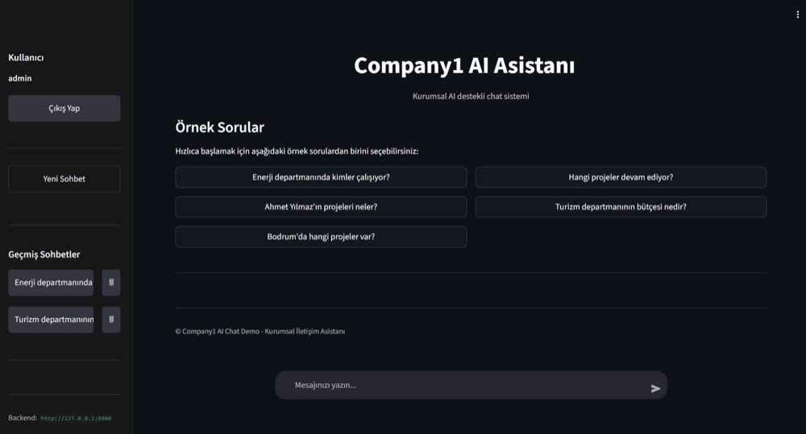

Kurumsal üretken yapay zekâ, RAG, agentic AI ve karar destek sistemleri
üzerine uçtan uca ürünler tasarlayıp üretime alıyorum. Matematik ve
bilgisayar bilimleri temeliyle, ölçeklenebilir backend mimarileri ve
güvenli veri erişimi üzerine çalışıyorum.
5+ yıllık yazılım mühendisliği deneyimine ve matematik–bilgisayar
bilimleri temeline sahip bir yapay zekâ mühendisiyim. Kurumsal üretken
yapay zekâ, RAG, agentic AI, yapay zekâ otomasyonu, akıllı karar destek
sistemleri ve ölçeklenebilir backend mimarileri üzerine uzmanlaşıyorum.
İK, finans, vergi, otelcilik, ihale ve proje yönetimi gibi farklı iş
fonksiyonlarına uçtan uca yapay zekâ ürünleri tasarlayıp teslim
ediyorum — iş probleminin keşfi ve mimari tasarımdan geliştirme,
entegrasyon, değerlendirme, dağıtım ve sürekli iyileştirmeye kadar
sürecin sahibi olarak. Python, .NET, Java, API'ler, veritabanları,
bulut platformları, dağıtık sistemler, DevOps ve güvenlik tarafındaki
mühendislik geçmişimi; teknik liderlik ve fonksiyonlar arası iş
birliğiyle birleştiriyorum.
5+ yıl
Yazılım mühendisliği deneyimi
Uçtan uca
İş probleminin keşfinden mimariye, geliştirmeden üretime sahiplik
%70
Kritik güvenlik açıklarında azalma
%90
Sistem yanıt sürelerinde iyileşme
Yetkinlikler
Temel teknolojiler
Kurumsal projelerde aktif olarak kullandığım teknolojiler, platformlar ve araçlar.
Yapay zekâ & üretken AI
Generative AI
LLM
RAG
Agentic AI
AI Agents
Multi-Agent Systems
AI Assistants
Prompt Engineering
Semantic & Vector Search
Embeddings
NL-to-SQL
Document AI
Enterprise Search
AI Evaluation & Monitoring
Human-in-the-Loop
AI Governance
Microsoft & Azure AI
Microsoft Copilot Studio
Azure AI Services
Azure AI Search
Azure Functions
Power Automate
SharePoint Integration
Programlama
Python
C#
Java
PHP
JavaScript
Node.js
Backend & mimari
.NET
REST API
SOAP
Mikroservisler
Dağıtık sistemler
Backend mimarisi
Postman
SoapUI
Symfony
Laravel
Bulut, DevOps & altyapı
Azure
AWS
Google Cloud
Docker
IIS
Linux
Windows Server
Git
Jenkins
CI/CD
JIRA
Veritabanları & veri
MSSQL
Oracle
MongoDB
Redis
SQL
Veri işleme & entegrasyon
Güvenlik & kalite
SonarQube
Fortify
Burp Suite
Penetrasyon testi
Güvenli yazılım geliştirme
Code review
Diller
Türkçe — ana dil
İngilizce — B2+ / Early C1
Kariyer
Deneyim
Ocak 2026 — Halen
Senior AI Engineer
IC İbrahim Çeçen Yatırım Holding A.Ş. · Ankara
Grup şirketleri genelinde kurumsal yapay zekâ sistemleri, akıllı
asistanlar, agentic iş akışları ve yapay zekâ destekli otomasyon
çözümlerinin tasarım ve geliştirmesine liderlik ediyorum. LLM, RAG,
Python servisleri, kurumsal arama, Microsoft Copilot Studio ve Azure
AI servislerini birleştiren üretime dönük çözümler kurguluyorum;
girişimlerin sahipliğini iş probleminin keşfinden sürekli
iyileştirmeye kadar uçtan uca üstleniyorum.
Mar 2023 — Ara 2025
Software Engineer | AI Engineer
Key Yazılım Çözümleri A.Ş. · Ankara
Tam kapsamlı yazılım mühendisliği ve üretim sorumluluklarını
sürdürürken yeni kurulan yapay zekâ girişimlerinde AI mühendisliği
rolünü üstlendim. Kullanım senaryosu keşfi, çözüm mimarisi,
teknik planlama, prototipleme ve değerlendirme süreçlerinde yer aldım.
Eki 2022 — Mar 2023
Backend Developer
Mevsimi A.Ş. · Ankara
Web, mobil ve ulusal e-ticaret sistemlerini entegre eden REST API'ler;
Symfony/Laravel backend'leri, ödeme ve lojistik sağlayıcı
entegrasyonları ile çok mağazalı operasyon yönetimi.
Tem 2022 — Ağu 2022
Junior Backend Developer
Jotform Yazılım A.Ş. · Ankara
PHP backend bileşenleri ve JavaScript arayüz özellikleri; müşteri
destek taleplerini filtreleyip doğru ekiplere yönlendiren mesaj
yönlendirme özelliği.
Ara 2021 — Tem 2022
Junior Software Developer
Piton Ar-Ge ve Yazılım A.Ş. · Eskişehir
Legacy ASP.NET uygulamalarının modern çatılara taşınması ve mimari
modernizasyonla %90'a varan performans iyileştirmesi; akıllı ulaşım
ve coğrafi bilgi sistemleri ürününün uçtan uca geliştirilmesi.
Kişiselleştirilmiş hasta verisiyle gebelik ve doğum risklerinin erken
tespitine odaklanan yapay zekâ tabanlı klinik karar destek
platformuna katkı; Java backend bileşenleri, API'ler ve AWS altyapısı.
Bağımsız
Bağımsız & freelance AI / yazılım projeleri
Serbest çalışma
LLM entegre uygulamalar, yapay zekâ ajanları, RAG sistemleri, API
tabanlı servisler, akıllı iş akışı otomasyonu ve özel yazılım
ürünleri; gereksinim analizinden dağıtım ve optimizasyona kadar
uçtan uca teslim.
Eğitim
2023 — 2025
Yüksek Lisans — Matematik ve Bilgisayar Bilimleri
Eskişehir Osmangazi Üniversitesi
Tez: Yapay zekâ algoritmalarının diferansiyel geometri ile
incelenmesi — algoritmaların diferansiyel geometri üzerinden
matematiksel modellenmesi ve Python ile uygulanması.
2018 — 2022
Lisans — Matematik ve Bilgisayar Bilimleri
Eskişehir Osmangazi Üniversitesi
Bölüm birincisi olarak mezuniyet.
Sertifikalar & eğitimler
Azure AI Engineer Associate (AI-102)
Microsoft · 2026 — devam ediyor
Machine Learning
Stanford / Coursera · 2023
Python and TensorFlow for Data Science
Udemy · 2024
Microservices Architecture
BTK Akademi · 2024
Clean Code & SOLID Principles
Udemy · 2024
DevOps Solutions
BTK Akademi · 2024
Secure Software Development
BTK Akademi · 2023
Portföy
Kurumsal yapay zekâ projeleri
Üretimde çalışan, iş fonksiyonları genelinde uçtan uca tasarlayıp teslim ettiğim
kurumsal yapay zekâ çözümleri.
Çok Kaynaklı İhale & Fırsat İstihbarat Ajanı
Uluslararası kaynakları sürekli izleyip iş fırsatlarını otomatik
keşfeden, toplayan, normalleştiren, çeviren, filtreleyen ve
değerlendiren yapay zekâ platformu. Kaynak bazlı adaptörler ve
otomatik işleme hatlarıyla yeni kaynak eklemeye uygun şekilde
tasarlandı; sonuçlar ihale yönetimi iş akışlarına aktarılıyor.
Agentic AI
Python
Azure Functions
Otomatik istihbarat hattı
Kurumsal İK & Bilgi Asistanı
Çalışanların İK prosedürlerine, kurumsal politikalara ve operasyonel
bilgiye doğal dille eriştiği asistan. Doküman depoları, SharePoint
içeriği ve yapılandırılmış kurumsal veri üzerinde RAG tabanlı bilgi
erişimi; kurumsal kimlik ve bilgi kaynakları üzerinden yetkilendirme
ve veri erişim kontrolleriyle.
Enterprise RAG
Copilot Studio
Azure
Bağlam duyarlı erişim
Vergi Karar İstihbarat Asistanı
Vergi ekiplerinin geçmiş Vergi Kurulu kararlarını, toplantı
tutanaklarını ve yorumları doğal dille araştırıp analiz etmesini
sağlayan asistan. Konu, tarih ve bağlam bazlı sorguları destekleyen
semantik erişim ve RAG mekanizmaları; hassas yorumlarda
human-in-the-loop denetimi.
RAG
Azure AI Search
Regüle alan
Human-in-the-Loop
Doküman Çeviri & Yeniden Oluşturma Platformu
Karmaşık kurumsal dokümanları özgün yapısı ve biçimi korunarak
düzenlenebilir Word çıktısına dönüştüren platform. Kurumsal
terminoloji sözlükleriyle terim duyarlı çeviri; taranmış belgeler,
OCR bağımlı içerik ve karmaşık yerleşimler dâhil zorlu girdileri
işleyerek jenerik çeviri araçlarının sınırlarını aşıyor.
Document AI
OCR
Terminoloji yönetimi
Biçim koruma
Doğal Dilden SQL'e Veri Erişim Asistanı
İş birimlerinin SQL yazmadan kurumsal sistemleri sorgulamasını
sağlayan mimari. LLM tabanlı akıl yürütmeyi kurumsal veritabanlarına
bağlayan; yetkilendirme, rol farkındalığı, sorgu doğrulama ve
denetimli erişimle güvenli, salt-okunur Text-to-SQL iş akışları.
LLM
Text-to-SQL
Güvenli veri erişimi
Kurumsal mimari
Diğer kurumsal AI çözümleri
Vergi beyan asistanı — kurumsal vergi beyan bilgisi ve belgeleri
İş ortağı analiz ajanı — potansiyel ortak değerlendirmesi
Ülke istihbarat ajanı — pazar değerlendirme ve teklif öncesi analiz
Şartname, ön yeterlilik ve sözleşme analiz ajanları
Otelcilik analitiği & veri asistanı
Yatırım ve girişim karar destek asistanı
Müşteri talebi orkestrasyonu — niyet tanıma ve akıllı yönlendirme
Yapay zekâ destekli gayrimenkul değerleme ve karar desteği
Açık kaynak projeler
Kaynak kodu GitHub üzerinde açık olan kişisel ve deneysel projeler.

ChatCore.AI
Kurumsal veriler üzerinde çalışan RAG destekli yapay zekâ asistanı.
Vektör arama ve önbellek katmanıyla ölçeklenebilir sohbet deneyimi.